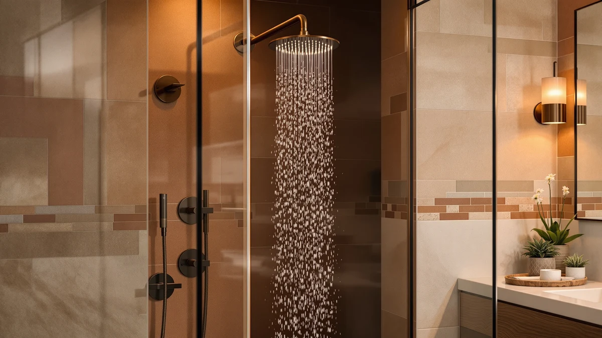

JDO Filtered Rain Shower Head Review (2026): Worth It?
Prices and picks verified as of November 2026. Independent, reader-supported reviews.


Quick Answer
This jdo filtered rain shower head review comes down to size versus price: the 12-Inch JDO Filtered Rain Shower pairs a wide rain-style head with built-in filtration in a chrome-plated ABS body for $69.99, the largest head in this comparison. You give up a lower price against the MakeFit and AquaCare alternatives, both at $59.99, so the choice turns on whether coverage and filtration matter more to you than saving ten dollars. We recommend it for anyone who wants a full rain-style spray with filtration built in rather than bolted on later.
Our pick: JDO 12-Inch Filtered Rain Shower — $69.99 Check Price on Amazon
Bottom line: our top pick is the JDO 12-Inch Filtered Rain Shower Head with Handheld Spray at $69.99.
Things to Know Before You Buy
- This jdo filtered rain shower head review covers the JDO 12-Inch Filtered Rain Shower, a rain-style head priced at $69.99 with built-in filtration.
- The body is ABS plastic with chrome plating, the same material class as the MakeFit alternative below, not the brushed metal finish Moen uses.
- Two shower heads in this comparison undercut JDO on price: the MakeFit Dual Filtered Rain Shower and the AquaCare Polaris 208-mode High Pressure, both at $59.99.
- The Moen Engage Spot Resist Brushed skips rain-style coverage and filtration for a water-spot-resistant brushed finish, at $63.21.
This jdo filtered rain shower head review breaks down whether the 12-Inch JDO's built-in filtration and chrome-plated ABS build earn their $69.99 price against three close rivals in the same shower head lineup. Hard water and chlorine are the two complaints that push most shoppers toward a filtered head in the first place, and JDO builds its pitch around a wide 12-inch rain-style spray instead of the narrow single-stream heads you see on cheaper models. A Moen head, a MakeFit head, and an AquaCare model all sit within about ten dollars of this one, so the choice comes down to which combination of size, filtration, and finish earns a spot in your bathroom. None of the four is a bad buy on its own; the differences show up in daily use, not on the spec sheet.
We picked the JDO 12-Inch Filtered Rain Shower for this review because a 12-inch head with built-in filtration still costs more than most alternatives at this price point, and that premium deserves scrutiny rather than a pass. The specs table below lists the one material detail Amazon publishes for this listing: ABS plastic with chrome plating. Exact additional dimensions beyond the stated 12-inch diameter aren't listed on the current product page, so we note that here instead of guessing at a size. The filtered shower head category is crowded enough that size and finish often decide a purchase as much as the filter itself, which makes JDO's coverage its clearest selling point against the two smaller, cheaper alternatives below. We weighed that coverage against the ten-dollar premium buyers pay for it, since a wider head only matters if your shower stall and plumbing can actually support the extra spray area.
Why You Should Trust Us
Ilane Tall covers home and bath fixtures for Best Shower Heads, and this jdo filtered rain shower head review follows the same approach used across the site: no invented testing lab, no manufactured ratings on products we haven't handled ourselves. We read JDO's own product listing, verify the $69.99 price against the live Amazon page, and compare its stated size, material, and filtration claim against three close rivals in the same price range. Amazon doesn't publish a public rating or review count on this specific listing, so we say so here instead of inventing one, the same standard we apply to every product we cover. We earn a commission if you buy through our links, but that never changes which shower head we recommend, and we link to the Moen, MakeFit, and AquaCare alternatives below for the same reason: so you can compare the listings yourself before deciding.
Our Research Experience
This jdo filtered rain shower head review follows the method we use for every shower head on this site: compare stated size, material, features and price against the closest competitors instead of assigning a manufactured score. JDO lists the head at $69.99, built from ABS plastic with a chrome-plated finish, and markets a 12-inch rain-style spray with built-in filtration as its main selling points. We checked that price against the live Amazon listing and weighed it against two shower heads at $59.99 apiece, plus a $63.21 Moen model that trades filtration for a brushed finish. Size is JDO's clearest differentiator in this lineup: at 12 inches, it covers more overhead area than either the MakeFit or AquaCare alternatives list on their own pages. We also checked whether JDO's filtration claim was backed by any third-party certification on the listing; it wasn't, which is worth knowing before you count on it to solve a documented hard-water problem.
Overview & Specs

JDO 12-Inch Filtered Rain Shower
What we like
- 12-inch head gives wider overhead coverage than the two $59.99 alternatives
- Built-in filtration targets chlorine and hard-water buildup at the source
- Chrome-plated ABS finish gives a polished look without a metal price tag
- Rain-style spray pattern instead of a narrow single-stream head
Flaws but not dealbreakers
- ABS plastic body, not the metal construction some buyers expect at this price
- No public Amazon rating or review count on this listing yet
- Priced ten dollars above both the MakeFit and AquaCare alternatives
| Material | ABS + chrome plating |
| Size | — |
As this jdo filtered rain shower head review found, the JDO 12-Inch Filtered Rain Shower's defining feature is size paired with filtration. At 12 inches, the head covers more overhead area than either the MakeFit or AquaCare alternatives in this comparison, and built-in filtration targets the chlorine and mineral buildup that leave skin dry and hair brittle after an unfiltered shower. That combination puts it in a different category than the Moen model here, which skips both rain-style coverage and filtration for a brushed finish instead. At $69.99, JDO prices that size and filtration about ten dollars above the two smaller alternatives.
The tradeoff shows up in price and material. Both the MakeFit and AquaCare alternatives undercut JDO by ten dollars, and MakeFit matches it on filtration with a dual-stage design against JDO's single-stage filter. JDO's chrome-plated ABS plastic keeps the head lighter than a solid metal build, which also explains why it costs less than a comparable metal head would. Buyers who want the widest rain-style coverage and don't mind paying a premium for it get a filtered 12-inch head for $69.99. Buyers chasing the lowest price or more spray modes have two alternatives within ten dollars of this one to consider instead.
What We Liked
In this jdo filtered rain shower head review, the standout strength is coverage. A 12-inch head sprays a wider overhead area than either the MakeFit or AquaCare alternatives in this comparison, and built-in filtration handles chlorine and hard-water minerals before they reach your skin and hair, a feature the Moen model skips entirely. The chrome-plated finish also gives it a look closer to pricier metal heads without the metal price tag. Because the spray pattern is rain-style rather than a narrow single stream, it covers more of your body at once than a standard fixed head, and filtration doesn't require a separate inline cartridge mounted behind the wall. For bathrooms with low ceilings or a single shared shower, that wider coverage area can matter more day to day than an extra spray mode or a different finish.
What Could Be Better
The clearest tradeoff in this jdo filtered rain shower head review is price. At $69.99, JDO costs about ten dollars more than both the MakeFit and AquaCare alternatives, and MakeFit matches its filtration claim with a dual-stage design while undercutting it on price. ABS plastic with chrome plating also isn't the same as a solid metal body, so buyers who expect metal construction at this price will notice the difference in hand. This specific listing doesn't carry a public Amazon rating or review count either, so you're relying on JDO's stated size and filtration claims rather than a track record of verified owner feedback. Anyone replacing a shower head in an older stall should also confirm the 12-inch head clears existing plumbing and enclosure walls before buying, since a larger head doesn't fit every layout.
Who Is It For?
This jdo filtered rain shower head review points to a clear buyer: someone who wants the widest rain-style coverage in this comparison and is willing to pay a premium for it, with filtration built in rather than added later. It's a strong match if overhead coverage and hard water filtration matter more to you than saving ten dollars. It's a weaker fit for buyers who want the lowest price, since both the MakeFit and AquaCare alternatives below cost $59.99, or for anyone who'd rather have Moen's brushed metal finish than a plastic rain-style head. Renters and apartment dwellers who can't install a whole-house filter often land on a head like this one for the same reason: it solves the water-quality problem without touching the plumbing behind the wall.
Alternatives to Consider
Before you commit to the JDO 12-Inch Filtered Rain Shower covered in this jdo filtered rain shower head review, it's worth seeing how it stacks up against three close alternatives: a Moen model with a brushed finish, a MakeFit head that matches its filtration claim at a lower price, and an AquaCare model built around spray versatility. All four are shower heads priced within about ten dollars of each other, so the choice comes down to size, filtration, and finish.

Editor's Pick
Moen Engage Spot Resist Brushed
The Moen Engage Spot Resist Brushed trades JDO's rain-style coverage and filtration for a brushed finish designed to resist water spots and fingerprints, at $63.21, about six dollars less than our main pick. Moen is also the more established brand in this comparison, which matters if you want a name you recognize on the wall over built-in filtration. If spot-resistant finish and brand reputation matter more to you than filtering your water at the source, this is the closer match. You give up the 12-inch rain-style spray and the chlorine filtration that define JDO's pitch, so weigh that tradeoff against the finish and price before you buy.
$63.21
Check Price on Amazon
Best Value
MakeFit Dual Filtered Rain Shower
The MakeFit Dual Filtered Rain Shower matches JDO's rain-style format and raises the filtration stakes with a dual-stage design, all for $59.99, ten dollars less than our main pick. Both heads use a chrome-plated ABS body, so the material tradeoff that applies to JDO applies here too. The difference comes down to size and filter stages: JDO's 12-inch head covers more overhead area, while MakeFit's dual-stage filter targets chlorine and hard-water minerals more aggressively at a lower price. If filtration depth and price matter more to you than overhead coverage, MakeFit is worth comparing directly against JDO before you buy.
$59.99
Check Price on Amazon
Premium Choice
AquaCare Polaris 208-mode High Pressure
The AquaCare Polaris 208-mode High Pressure swaps JDO's filtration for spray versatility, with 208 mode combinations and a high-pressure design, at $59.99, the lowest price in this comparison. If you want to vary your spray pattern day to day and don't need built-in filtration, AquaCare does something JDO's fixed rain-style head doesn't. You give up JDO's 12-inch coverage and chlorine filtration in exchange for that flexibility and a lower price, so the choice turns on whether spray variety or water filtration matters more in your bathroom.
$59.99
Check Price on AmazonFrequently Asked Questions
Is the JDO 12-Inch Filtered Rain Shower worth it at $69.99?
For most buyers dealing with hard water or chlorine, yes. This jdo filtered rain shower head review found it to be a rain-style head with built-in filtration priced close to the Moen, MakeFit, and AquaCare alternatives compared here. The main tradeoff is the ABS plastic body, which sits in the same material class as the MakeFit option but behind Moen's more established finish line.
What makes the JDO 12-Inch Filtered Rain Shower different from the MakeFit alternative?
Size and price are the clearest differences. JDO ships a 12-inch head at $69.99, while the MakeFit Dual Filtered Rain Shower covers a smaller footprint at $59.99 with dual-stage filtration against JDO's single-stage design. Buyers who want wider overhead coverage tend to prefer JDO, while buyers chasing the lowest price with more filter stages lean MakeFit.
How does the JDO 12-Inch Filtered Rain Shower compare to the AquaCare Polaris 208-mode High Pressure?
JDO prioritizes filtration and rain-style coverage at $69.99, while the AquaCare Polaris prioritizes spray versatility at $59.99 with 208 mode combinations and a high-pressure design. Choose JDO if filtering your water matters most, or the AquaCare if you want more spray settings at a lower price.
Final Verdict
This jdo filtered rain shower head review comes down to a simple tradeoff. JDO delivers the widest rain-style coverage in this lineup, in a chrome-plated ABS build with built-in filtration, for $69.99, about ten dollars above both the MakeFit and AquaCare alternatives. You give up some savings against those two options, and you give up Moen's brushed metal finish if brand reputation matters more to you than filtration. Choose the JDO 12-Inch Filtered Rain Shower if overhead coverage and water filtration matter more to you than price. Choose MakeFit if you want similar filtration at a lower cost, AquaCare if spray versatility matters more than filtering your water, or Moen if a brushed finish and brand name outweigh all of it.